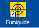
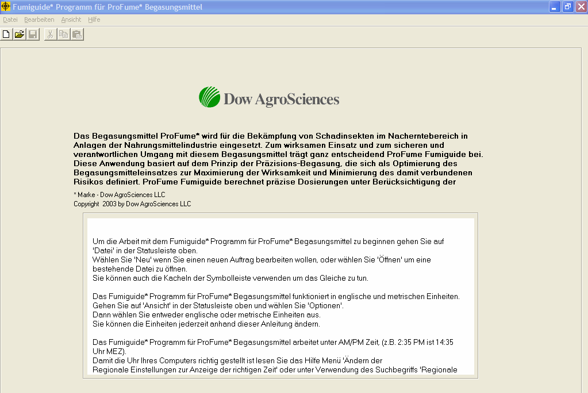
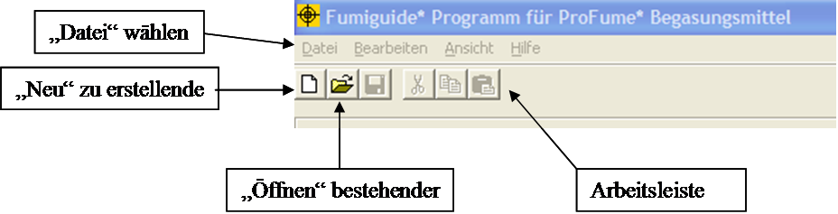
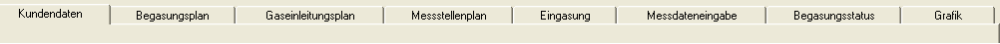
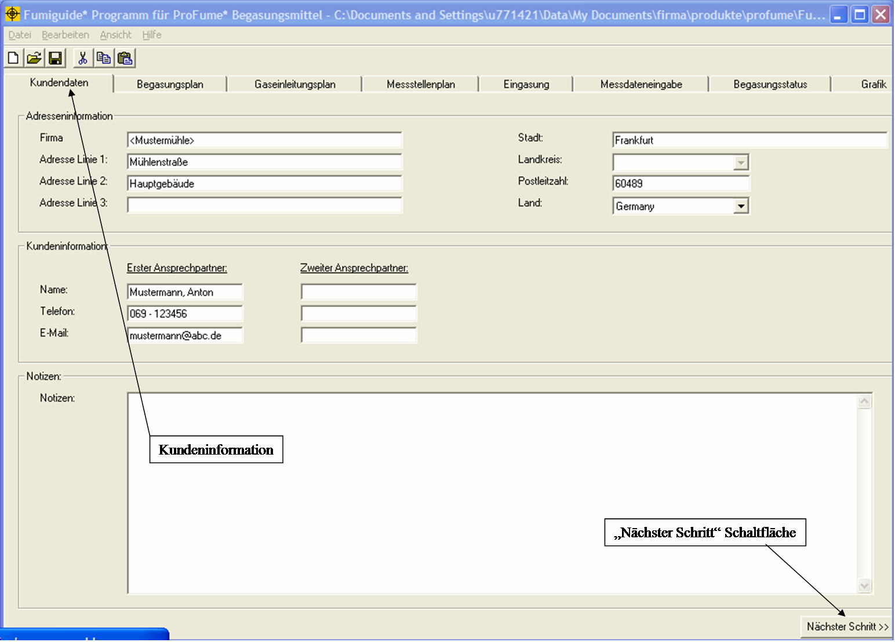
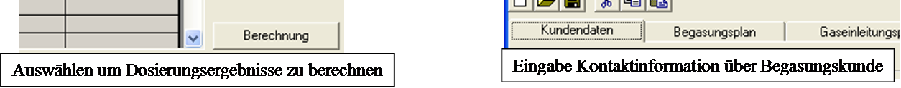
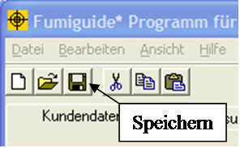
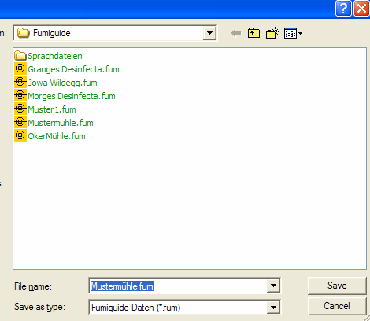

Arbeiten mit dem Programm und Verwalten von Dateien
Um
mit dem ProFume Fumiguide Programm zu arbeiten, klicken Sie zunächst zweimal auf
das ProFume Symbolfeld am unteren Bildschirmrand.

Der folgende Bildschirm wird
geöffnet.

Obere Menüleiste:
Die am oberen Bildschirmrand angeordnete Menüleiste. Zu den Menüpunkten gehören
Datei, Bearbeiten, Ansicht und
Hilfe.
Funktionsleiste: Eine Reihe von
Funktionen, die unterhalb der Oberen Menüleiste angeordnet sind: Neues
Dokument, Öffnen, Speichern, Drucken,
Ausscheiden, Kopieren und Einfügen .

Nachdem Sie
das Programm aufgerufen haben, klicken Sie in der Oberen Menüleiste auf
Datei. Klicken Sie auf Neues Dokument, wenn Sie einen neuen
Auftrag eingeben möchten, oder auf Öffnen, wenn Sie einen bereits
vorhandenen Auftrag aufrufen möchten. Sie können hierzu auch auf die
entsprechenden Symbolfelder in der Funktionsleiste klicken.
Wenn Sie
einen bereits vorhandenen Auftrag öffnen, finden Sie alle zuvor gespeicherten
Dateien in dem Dateiordner, in dem sie von Ihnen gespeichert wurden (siehe
unten). Wählen Sie die gewünschte Datei innerhalb des Dateiordners, indem Sie
auf den Dateinamen, zum Beispiel "Mustermühle.fum", und dann auf Öffnen
klicken.

Wenn Sie die selbe Anlage erneut begasen möchten und für die
betreffende Anlage bereits eine Fumiguide-Datei vorliegt, können Sie diese Datei
öffnen und einfach den Dateinamen so ändern, dass der aktuelle Auftrag daraus
ersichtlich wird. Beispiel: Wenn Sie bereits eine Datei "Mustermühle.fum"
abgelegt haben und diese Einrichtung in 2003 erneut begast werden soll, können
Sie diese Datei öffnen, die Daten mit den neuen Angaben aktualisieren und die
neue Datei unter "Mustermühle.fum" speichern. Denken Sie daran, in diesem Fall
die Funktion Speichern unter (F12) im Oberen Menü zu verwenden. Dadurch
ersparen Sie sich die Neueingabe von Kundendaten und Begasungsparametern.
Bitte beachten Sie das Mitteilungsfeld, das bei der Durchführung von
Speichern unter [neuer Dateiname] angezeigt wird. Wenn die ProFume
Konzentrations-Messdaten nicht in die neue Datei übernommen werden sollen,
wählen Sie Ja. Wenn die ProFume Konzentrations-Messdaten in die neue Datei
übernommen werden sollen, wählen Sie Nein.

Das ProFume Fumiguide Programm zeigt das Fenster "Kundendaten" an (siehe unten). Beachten Sie bitte die anderen Fenster innerhalb des Fumiguide Programms.

Nachstehend finden Sie eine Beschreibung der einzelnen Fenster:
Kundendaten – Das erste Fenster im
ProFume Fumiguide Programm. Hier können Anschrift, Kontaktinformationen und
Anmerkungen für den Begasungsvorgang gespeichert werden.
Begasungsplan – Hier werden alle Daten
und Variablen im Zusammenhang mit der Berechnung der Begasungsdosis bzw.
dosierung gespeichert.
Gaseinleitungsplan – Das dritte Fenster
im ProFume Fumiguide Programm. Hier werden Eingasungsleitungen und Ventilatoren
eingegeben und die tatsächlichen und zulässigen Eingasungsraten für die
verschiedenen Bereiche eines zu begasenden Objekts berechnet.
Messstellenplan – Das vierte Fenster im
ProFume Fumiguide Programm. Hier wird die Position der Messleitung festgelegt
(Messpunkte nach Bereichen).
Eingasung – Das fünfte Fenster im
ProFume Fumiguide Programm, für die Erfassung der in den einzelnen Bereichen
eines Gebäudes freigesetzten Begasungsmittelmengen.
Messdaten-Eingabe– Das sechste Fenster
im ProFume Fumiguide Programm dient der Eingabe der Messdaten.
Begasungsstatus – Das siebte Fenster im
ProFume Fumiguide Programm. Hier werden verstrichene Zeit, HWT, Beginn und Ende
der HWT, erzieltes CT-Produkt und Begasungs-Status/Empfehlungen nach Messpunkt
angezeigt.
Grafik – Das achte Fenster im ProFume
Fumiguide Programm, zur grafischen Darstellung der Konzentration nach Zeit für
die einzelnen Messpunkte.
Sie können jeweils zum nächsten Feld
vorrücken, indem Sie in der rechten unteren Ecke der einzelnen ProFume Fumiguide
Fenster auf Nächster Schritt
klicken; dadurch rückt der Bediener zum nächsten Fenster innerhalb des Programms vor. Sie können auch auf den Fensternamen am oberen Bildschirmrand klicken.

"Mauszeiger"-Anzeigen (Mouse-Over)
Beim Arbeiten mit ProFume Fumiguide werden Sie feststellen, dass manchmal
vorübergehend Texte angezeigt werden, wenn Sie mit dem Cursor über bestimmte Bildschirmbereiche fahren. Diese hilfreichen Anzeigen erklären oder erläutern jeweils die unter dem Cursor liegende Funktion. Nachstehend sehen Sie zwei Beispiele für diese so genannten "Mauszeiger"-Anzeigen.

Nach dem
Bearbeiten einer Datei sollten Sie die Daten durch Anklicken des Symbolfelds
Speichern sichern. HINWEIS: Es wird dringend empfohlen, die Daten
während der Eingabe häufig zu speichern.

Wenn das Fenster Speichern
geöffnet wird, können Sie einen möglichst sinnvollen Dateinamen eingeben
(etwa nach Datum, Auftragsbezeichnung, Ort der Begasung usw.).

Mit
mehreren Kopien von Fumiguide gleichzeitig arbeiten. ProFume Fumiguide
ist so konzipiert, dass Sie mehrere Kopien des Programms gleichzeitig laufen
lassen und damit verschiedene Aufträge gleichzeitig bearbeiten können.